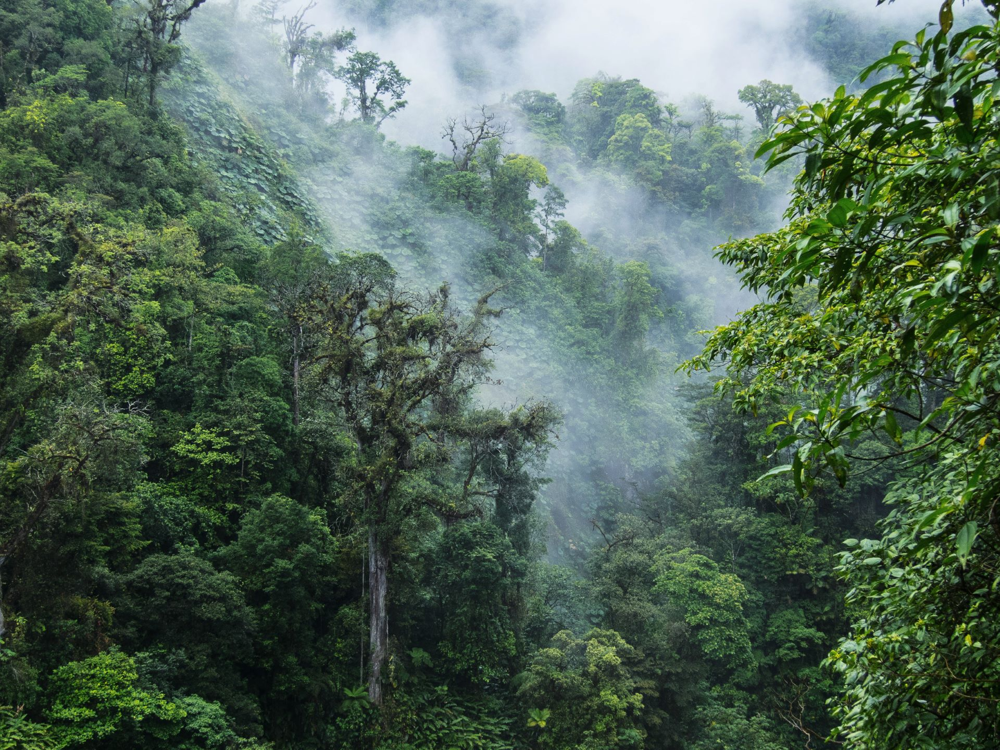

Travel
Monteverde, Costa Rica


South America
Monteverde, Costa Rica is situated 4,662 feet above sea level. Monteverde’s famed cloud forests are the byproduct of fog (a thick, low-hanging cloud) tangling amongst the leaves and branches of the forest canopy. Trails and hanging bridges offer a close-up view of the diverse variety of animals and plants living in the forest.
One of the main tourist locations in Monteverde is the town of Santa Elena, which is not only home to a variety of restaurants with delicious food, but a serpentarium as well. You can enjoy hiking, ziplining, and observing the native wildlife while staying in Monteverde. It’s a truly beautiful place.
Photo Gallery
You can hike trails and zipline through the Monteverde cloud forests.

Hanging bridges over the cloud forests allow for a birds-eye view.

You can visit hummingbirds at Monteverde’s Selvatura Park’s hummingbird garden, which exhibits over 14 different species of hummingbird.

El Tigre Waterfalls is made up of four falls, which are connected by trails and hanging bridges.
Chiangmai, Thailand


Asia
Chiang Mai, nestled in the lush hills of northern Thailand, is a city that captivates with its unique blend of cultural richness and natural beauty. Situated approximately 700 kilometers north of Bangkok, Chiang Mai is the largest city in the region and serves as the capital of the province of the same name. Its geographical location is nothing short of enchanting, surrounded by forested mountains and picturesque landscapes. This charming city, often referred to as the "Rose of the North," offers visitors a delightful escape from the bustling urban life, inviting them to explore a realm where tradition meets modernity amidst a backdrop of stunning scenery.
The heart of Chiang Mai beats with a rich history that dates back over 700 years. Founded in 1296, the city was originally the capital of the ancient Lanna Kingdom. Today, remnants of its storied past are scattered throughout the city, from the ancient temples that dot the landscape to the preserved city walls and moats that harken back to a bygone era. Among the city's treasures is the revered Wat Phra Singh, a 14th-century temple known for its intricate architecture and revered Buddha image. Chiang Mai's historical sites provide a captivating glimpse into its heritage, making it a destination that seamlessly weaves together the past and present for visitors to explore and appreciate.
Photo Gallery

You can see hot balloons in Chiang Mai as well.

You can see cute elephants in Chiang Mai! Isn’t that fun?!

There are so many beautiful temples in Chiang Mai.

Be respectful to the monks.

And don’t forget to treat yourself with delicious Thai food!
Bangkok


Southeast Asia
Bangkok, Thailand’s capital, is a large city known for ornate shrines and vibrant street life. It is officially known in Thai as Krung Thep Maha Nakhon and colloquially as Krung Thep.
Bangkok welcomes more visitors than any other city in the world and it doesn’t take long to realize why. Bangkok is a city of contrasts with action at every turn. Marvel at the gleaming temples, catch a tuk tuk through bustling Chinatown or take a longtail boat through floating markets. Food is another Bangkok highlight, from local dishes served at humble street stalls to haute cuisine at romantic rooftop restaurants.
Photo Gallery

Khlong Lat Mayom, one of the best floating markets in Bangkok.It is most famous for its food. Try snakehead fish and the shrimps.

The Grand Palace is a complex of buildings at the heart of Bangkok.

Khao San road, which now represents a series of streets, is a place in downtown Bangkok where backpackers and tourists are immediately drawn to from when they first touch down in the airport.

Wat Arun is one of the most popular and well-known places of worship. Famous for its iridescent glow when first light hits its porcelain finish at dawn, it also resembles an ancient city at first glance.